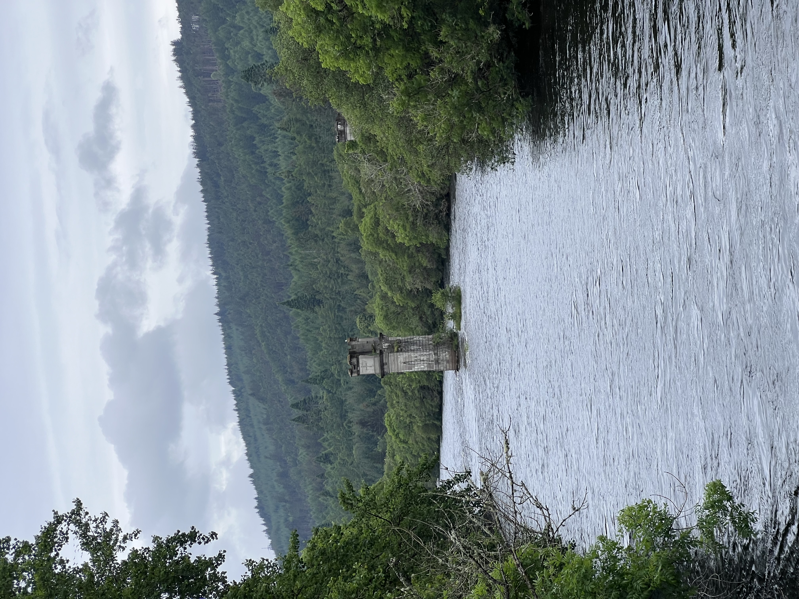

Multi-day touring transport
Transport coordination supporting multi-day touring itineraries across England, Scotland, Wales and Ireland for organised group travel programmes.

UK Inbound Ground Transport supports international tour operators and destination management companies delivering structured travel programmes across England, Scotland, Wales and Ireland.
UK Inbound Ground Transport works with travel trade partners delivering inbound tourism programmes across the UK and Ireland, supporting structured itineraries, regional touring routes and organised group travel movements.
Our operational focus is on practical routing, programme timing and dependable transport delivery for touring programmes requiring disciplined coordination.
Transport coordination supporting multi-day touring itineraries across England, Scotland, Wales and Ireland for organised group travel programmes.
Operational support for airport arrivals and departures serving international touring programmes and organised group itineraries.
Ground transport supporting structured travel itineraries linking major gateway cities and regional touring destinations.
Our airport transfer services support inbound touring programmes, group arrivals, departures and onward itinerary movements across major gateway airports in the United Kingdom and Ireland.
Heathrow, Gatwick, Stansted, Luton, London City and Southampton-linked arrival movements for touring programmes beginning or ending in southern England.
Manchester, Birmingham, Bristol, Liverpool, Newcastle, Cardiff, Edinburgh, Glasgow, Aberdeen and Inverness for regional touring programmes.
Dublin, Cork, Shannon, Belfast International, Belfast City and other Ireland gateway airports serving organised travel itineraries.
We support cruise operators, shore excursion companies and destination management companies delivering organised shore programmes, cruise transfers and touring itineraries from principal cruise ports across the United Kingdom and Ireland.
Southampton, Dover and Portland transport support for cruise arrivals, shore excursions and onward touring programmes.
Greenock, Edinburgh, Invergordon, Newcastle, Liverpool and regional British cruise calls for shore-based touring programmes.
Belfast, Dublin, Dún Laoghaire, Cork and other Ireland cruise calls for shore excursions, cruise transfers and organised group itineraries.
UK Inbound Ground Transport works exclusively with travel trade partners delivering inbound travel programmes across the United Kingdom and Ireland.
Operational transport support for escorted tours and structured multi-day travel programmes.
Coordinated transport delivery for inbound itineraries requiring dependable routing, scheduling and programme flow.
Structured transport support for cultural, educational and special interest group itineraries.
Successful touring programmes depend on careful route planning, programme timing and dependable operational delivery across the transport element of the itinerary.
We review travel routes, programme structure and operational feasibility before programme delivery.
Transport operations are aligned with itinerary timings and touring programme requirements.
Structured support for touring programmes in operation across the United Kingdom and Ireland.
If you are planning a UK or Ireland itinerary for organised group travel, our team would be pleased to discuss how our operational transport support can assist your programme delivery.